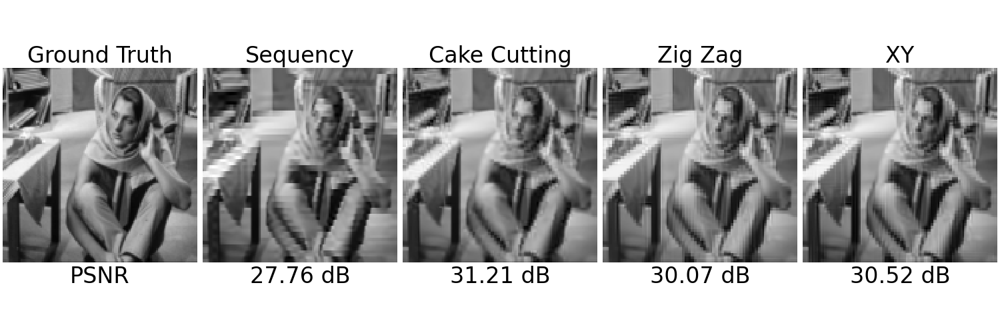

Note
New to DeepInverse? Get started with the basics with the 5 minute quickstart tutorial..
Pattern Ordering in a Compressive Single Pixel Camera#
This demo illustrates the impact of different Hadamard pattern ordering algorithms in the Single Pixel Camera (SPC), a computational imaging system that uses a single photodetector to capture images by projecting the scene onto a series of patterns. The SPC is implemented in the DeepInverse library.
In this example, we explore the following ordering algorithms for the Hadamard transform:
Sequency Ordering: Rows are ordered based on the number of sign changes (sequency pattern). Reference: https://en.wikipedia.org/wiki/Walsh_matrix#Sequency_ordering
Cake Cutting Ordering: Rows are ordered based on the number of blocks in the 2D resized Hadamard matrix. Reference: https://doi.org/10.3390/s19194122
Zig-Zag Ordering: Rows are ordered in a zig-zag pattern from the top-left to the bottom-right of the matrix. Reference: https://doi.org/10.1364/OE.451656
XY Ordering: Rows are ordered in a circular pattern starting from the top-left to the bottom-right. Reference: https://doi.org/10.48550/arXiv.2209.04449
We compare the reconstructions obtained using these orderings and visualize their corresponding masks and Hadamard spectrum.
import torch
from pathlib import Path
import deepinv as dinv
from deepinv.utils import get_image_url, load_url_image
from deepinv.utils.plotting import plot
from deepinv.loss.metric import PSNR
from deepinv.physics.singlepixel import hadamard_2d_shift
from deepinv.utils.compat import zip_strict
General Setup#
BASE_DIR = Path(".")
RESULTS_DIR = BASE_DIR / "results"
# Set the global random seed for reproducibility.
torch.manual_seed(0)
device = dinv.utils.get_device()
Selected GPU 0 with 8047.25 MiB free memory
Configuration#
Define the image size, noise level, number of measurements, and ordering algorithms.
img_size_H = 128 # Size of the image (128x128 pixels)
img_size_W = 128
noise_level_img = 0.0 # Noise level in the image
n = img_size_H * img_size_W # Total number of pixels in the image
m = 5000 # Number of measurements
orderings = [
"sequency",
"cake_cutting",
"zig_zag",
"xy",
] # Ordering algorithms to compare
Load Image#
Load a grayscale image from the internet and resize it to the desired size.
url = get_image_url("barbara.jpeg")
x = load_url_image(
url=url,
img_size=(img_size_H, img_size_W),
grayscale=True,
resize_mode="resize",
device=device,
)
Create Physics Models#
Instantiate Single Pixel Camera models with different ordering algorithms.
physics_list = [
dinv.physics.SinglePixelCamera(
m=m,
img_size=(1, img_size_H, img_size_W),
noise_model=dinv.physics.GaussianNoise(sigma=noise_level_img),
device=device,
ordering=ordering,
)
for ordering in orderings
]
Generate Measurements and Reconstructions#
Generate measurements using the physics models and reconstruct images using the adjoint operator.
y_list = [physics(x) for physics in physics_list]
x_list = [physics.A_adjoint(y) for physics, y in zip_strict(physics_list, y_list)]
Calculate PSNR#
Compute the Peak Signal-to-Noise Ratio (PSNR) for each reconstruction.
psnr_metric = PSNR()
psnr_values = [psnr_metric(x_recon, x).item() for x_recon in x_list]
# Prepare titles for plotting
title_orderings = [o.replace("_", " ").title() for o in orderings]
title_orderings[-1] = "XY" # Special case for 'xy'
titles = ["Ground Truth"] + title_orderings
subtitles = ["PSNR"] + [f"{psnr:.2f} dB" for psnr in psnr_values]
# Print information about the SPC setup
undersampling_rate = physics_list[0].mask.sum().float() / n
print(f"Image Size: {x.shape}")
print(f"SPC Measurements: {physics_list[0].mask.sum()}")
print(f"SPC Undersampling Rate: {undersampling_rate:.2f}")
Image Size: torch.Size([1, 1, 128, 128])
SPC Measurements: 5000.0
SPC Undersampling Rate: 0.31
Plot Reconstructions#
Visualize the ground truth and reconstructed images with PSNR values.
plot(
[x] + x_list,
titles=titles,
subtitles=subtitles,
show=True,
figsize=(15, 5),
fontsize=24,
)
# Recovery Algorithm
# ------------------
# Use a Plug-and-Play (PnP) denoising prior with the ADMM optimization algorithm for image recovery.
from deepinv.models import DnCNN
from deepinv.optim.data_fidelity import L2
from deepinv.optim.prior import PnP
from deepinv.optim import ADMM
n_channels = 1 # Number of channels in the image
# Define the data fidelity term (L2 loss)
data_fidelity = L2()
# Specify the denoising prior using a pretrained DnCNN model
denoiser = DnCNN(
in_channels=n_channels,
out_channels=n_channels,
pretrained="download", # Automatically downloads pretrained weights
device=device,
)
# Define the prior using the Plug-and-Play framework
prior = PnP(denoiser=denoiser)
# Set optimization parameters
max_iter = 5 # Maximum number of iterations
noise_level_img = 0.03 # Noise level in the image
stepsize = 0.8 # Step size for the optimization
model = ADMM(
prior=prior,
data_fidelity=data_fidelity,
early_stop=False,
max_iter=max_iter,
verbose=False,
stepsize=stepsize,
sigma_denoiser=noise_level_img,
g_first=True,
)
# Set the model to evaluation mode (no training required)
model.eval()
# Perform image reconstruction using the optimization algorithm
x_recon = []
psnr_values = []
for y, physics in zip_strict(y_list, physics_list):
x_recon.append(model(y, physics))
psnr_values.append(psnr_metric(x_recon[-1], x).item())
# Update titles with PSNR values for the reconstructed images
titles = ["Ground Truth"] + title_orderings
subtitles = ["PSNR"] + [f"{psnr:.2f} dB" for psnr in psnr_values]
Downloading: "https://huggingface.co/deepinv/dncnn/resolve/main/dncnn_sigma2_gray.pth?download=true" to /local/jtachell/.cache/torch/hub/checkpoints/dncnn_sigma2_gray.pth
0%| | 0.00/2.55M [00:00<?, ?B/s]
100%|██████████| 2.55M/2.55M [00:00<00:00, 69.1MB/s]
Plot ADMM-TV Reconstructions#
Visualize the ground truth and reconstructed images with PSNR values.
Visualize Masks and Hadamard Spectrum#
Prepare and plot masks and the Hadamard spectrum for visualization.
masks = [physics.mask for physics in physics_list]
shifted_masks = [hadamard_2d_shift(mask) for mask in masks]
# Calculate the Hadamard spectrum for visualization
physics_full = dinv.physics.SinglePixelCamera(
m=n,
img_size=(1, img_size_H, img_size_W),
noise_model=dinv.physics.GaussianNoise(sigma=noise_level_img),
device=device,
)
y_spectrum = hadamard_2d_shift(physics_full(x))
y_spectrum = torch.pow(torch.abs(y_spectrum), 0.2)
y_spectrum = y_spectrum / y_spectrum.max()
# Plot the masks and Hadamard spectrum
plot(
[y_spectrum] + shifted_masks,
titles=["Hadamard Spectrum"] + title_orderings,
show=True,
figsize=(15, 5),
cmap="jet",
fontsize=24,
)
Total running time of the script: (0 minutes 9.425 seconds)